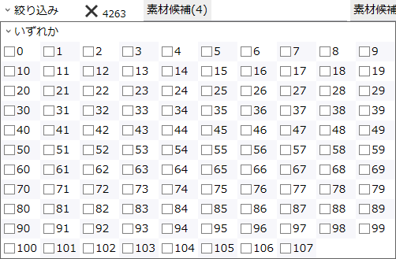
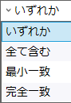

統計>エヴァイユ
《ナンバーズ・エヴァイユ》で特殊召喚可能な「No.」モンスターについて、その素材となる候補を調べる機能です。
説明
要素をクリックすると説明が表示されます。素材の絞り込み

-
チェックすると、その「No.」を素材候補に指定します。
- 例: 13をチェックすると、以下のように絞り込まれます。
- 候補リスト(左端)には、「No.13」を使って作れる「No.」のみが表示される。
- 組み合わせリスト(中央)には、「No.13」を含むような組み合わせのみが表示される。
- を押すと全てのチェックを外します。
-
上部のコンボボックスで、複数の「No.」をチェックした場合のマッチ方法を指定します。

- いずれか: 指定された「No.」のうち、いずれか1つ以上を含む素材候補がヒットします。
-
全て含む: 指定された「No.」を全て含む素材候補がヒットします。
- 指定された「No.」が5種類以上の場合、1つもヒットしなくなります。
-
最小一致: 指定されていない「No.」を含まないような素材候補がヒットします。
- 指定された「No.」が3種類以下の場合、1つもヒットしなくなります。
-
完全一致: 指定された「No.」と全く組み合わせの素材候補がヒットします。
- 指定された「No.」が4種類でない場合、1つもヒットしなくなります。